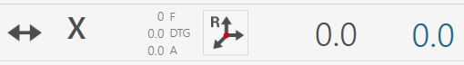

Beim Start der Anwendung wird, sofern die Achsen bereits referenziert wurden, der folgende Startbildschirm angezeigt:
ACHTUNG!
Beim Start der Maschine ist bei Bewegungen der Achsen, solange die Referenzierung noch nicht ausgeführt wurde, äußerste Vorsicht geboten; es kann zu Kollisionen mit den mechanischen Endanschlägen der Maschine kommen und dadurch ihre ordnungsgemäße Funktion beeinträchtigt werden.
Parameter Ermöglicht den Zugriff auf die Programmparameter von Parametrix.
Werkzeugparameter Durch Drücken der Schaltfläche wird die Seite mit den Werkzeugparametern geöffnet. Eine ausführliche Beschreibung der Parameterseite finden Sie im Kapitel „Werkzeugkonfiguration“.
Automatische Drehung 0/ 90 Grad Die Achse „C“ wird beim Drücken der Schaltfläche automatisch auf 0 oder 90 Grad verfahren.
Automatisches Parken Beim Drücken führt die Maschine automatisch eine Verfahrbewegung der Achsen „X“, „Y“, „Z“, „C“ in die Nullposition aus. Die Bewegungen werden von der Maschine in folgender Reihenfolge ausgeführt: (A) - Achse „Z“ in absolute Nullposition; (B) - Achse „C“ in absolute 0-Position; (C) - Achsen „X“ und „Y“ gleichzeitig in absolute Nullposition;
ACHTUNG!
Für das automatische Parken müssen bestimmte Sicherheitsbedingungen erfüllt sein:
Die Position der Achse „A“ muss 0_ betragen.
Sicherstellen, dass der für die Positionierung erforderliche Bewegungsbereich (siehe nebenstehende Abbildung) frei ist.
Nullpunkt Führt die Referenzierung der Achsen aus (dieser Vorgang ist beim Start der Maschine oder wenn die rechteckigen Anzeigen rot sind, erforderlich). Nach Abschluss des Referenzierzyklus sind die Anzeigen grau. Die Referenzierung umfasst die sequenzielle Bewegung der Achsen:
Achse Z
Achse A
Achse C
Gleichzeitig die Achsen X und Y
Achse B (Optional: gesteuerte Drehmaschine)
HINWEIS
Die Referenzierung ist nur zulässig, wenn der codierte Schlüssel in die dafür vorgesehene, an der Bedienkonsole befindliche Stelle eingesetzt ist.
Internes Wasser ein-/ausschalten Durch Drücken dieser Schaltfläche wird die Wasserzufuhr durch das Innere des Werkzeugs aktiviert. Die Anzeige über der Schaltfläche ändert ihre Farbe: Grün = Ein; Rot = Aus.
Wasser ein-/ausschalten Durch Drücken dieser Schaltfläche wird die Wasserzufuhr der Hauptleitung aktiviert. Die Anzeige über der Schaltfläche ändert ihre Farbe: Grün = Ein; Rot = Aus.
Manueller Werkzeugwechsel Durch Drücken der Schaltfläche wird der Werkzeugwechselvorgang gestartet.
Wartungen Durch Drücken dieser Schaltfläche wird ein Fenster mit allen Wartungen der Maschine angezeigt. Es werden sowohl die durchzuführenden Wartungen als auch die Wartungen im Sollzustand angezeigt. Wenn mindestens eine Wartung erforderlich ist.
Hilfe Durch Drücken dieser Schaltfläche werden die Darstellung aller derzeit sichtbaren Schaltflächen und ihr Verhalten geringfügig geändert. Nun kann jede Schaltfläche mit einem kleinen Fragezeichen in der oberen linken Ecke gedrückt werden, um über eine kurze Meldung die Funktion der Schaltfläche kennenzulernen. Um diesen Hilfemodus zu verlassen, muss lediglich erneut die Schaltfläche „Hilfe“ gedrückt werden.
Beim Start der Anwendung ist die Funktion MANUELL vorausgewählt. Diese Seitenleiste enthält die folgenden verfügbaren Befehle und Programme/Funktionen:
In dieser Oberfläche werden die Werte der Maschinenachsen angezeigt.
Beispiel des Oberflächenelements „Achsen“ mit Ursprung 0 und bereits referenzierten Achsen:
Beispiel des Oberflächenelements „Achsen“ mit Ursprung 0 und noch nicht referenzierten Achsen:
Im Folgenden werden die Elemente dieses Bereichs der gemeinsamen Benutzeroberfläche erläutert; als Referenz dienen die Elemente bei bereits referenzierten Achsen.

Istposition: gibt die Position der Achse relativ zum aktiven Ursprung an. Sollposition: gibt die einzustellende Position an, um die Achsbewegung durch Drücken der Schaltfläche MDI oder RTCP auszuführen. F: Feed, Verfahrgeschwindigkeit in mm/Minute. DTG: Distance To Go, Abstand zum Ziel. A: Ampere.
Achse zurücksetzen Durch Drücken dieser Schaltfläche wird der Nullpunkt des aktiven Ursprungs auf die aktuelle Position der entsprechenden Achse (X, Y oder Z) gesetzt. Das Zurücksetzen einer Achse kann nur bei Ursprüngen ungleich 0 (Null) ausgeführt werden. Um den Ursprung in Werkzeugkoordinaten (TCP) zu verwenden, müssen vor dem Drücken der Schaltfläche Achse zurücksetzen die korrekten Abmessungen des montierten Werkzeugs eingestellt worden sein.
Automatische Drehung _90 Grad Die Position der Achse „C“ wird im Uhrzeigersinn um 90 Grad erhöht. Beispiel: Die Maschine befindet sich bei 12 Grad. Durch Drücken der Schaltfläche „Automatische Drehung _90 Grad“ fährt die Maschine auf 102 Grad: 12 _ 90.
Automatische Drehung -90 Grad Die Position der Achse „C“ wird gegen den Uhrzeigersinn um 90 Grad verringert. Beispiel: Die Maschine befindet sich bei 102 Grad. Durch Drücken der Schaltfläche „Automatische Drehung -90 Grad“ fährt die Maschine auf 12 Grad: 102 - 90.
In diesem Bedienfeld werden einige Schaltflächen angeboten, deren Verhalten nachfolgend erläutert wird:
MAN (Manuelle Bewegung aktivieren) Um die Maschine manuell verwenden zu können, müssen die Spindeln korrekt positioniert und bestimmte Funktionen aktiviert werden. Die Schaltfläche ist für diesen Zweck vorgesehen.
HINWEIS
Wenn der manuelle Betrieb aktiviert ist, leuchtet die danebenliegende Anzeige-LED grün.
Saugnapfachse Bezugsachse, an der die Saugnäpfe montiert sind.
Alarmschwelle Gibt den Schwellenwert an, bei dessen Überschreitung der Alarm ausgelöst und die Spindeldrehung gestoppt wird.
Ausgewählter Ursprung Durch Anklicken des Feldes „Ursprung“ erhält der Bediener die Möglichkeit, den für die Bearbeitung verwendeten Ursprung zu ändern. Das Ändern dieses Feldes löst die Aktualisierung der Werte der Achsen aus. Die Ursprungswerte können einschließlich 0 bis 19 betragen.
MDI Beim Drücken führt die Maschine die Bewegung bis zum Erreichen der in den Sollpositionen eingestellten Werte aus (siehe oben). Die Geschwindigkeit der Achsen X und Y wird über die jeweiligen Potentiometer gesteuert, während die anderen Achsen über das interpolierte Potentiometer gesteuert werden.
Im Folgenden wird nur eines der dem Bediener für die Verwaltung der installierten Scheiben zur Verfügung stehenden Fenster beschrieben, da die übrigen ähnliche Funktionen aufweisen.
Erste Bezugsachse Erste Bezugsachse für jede Scheibe (im Beispiel X1 für SCHEIBE1)
HINWEIS
Bei der Positionierung der X-Achsen wird als Bezug für die
Sollposition die Mitte der Scheibe verwendet; die Istposition weicht um die halbe Kernstärke der Scheibe ab.
Zweite Bezugsachse Zweite Bezugsachse für jede Scheibe (im Beispiel Z1 für SCHEIBE1)
Spindeldrehung starten/stoppen Steuert das Ein- und Ausschalten der Scheibe der betreffenden Spindel. Die Drehzahl der Scheibe wird in den Werkzeugparametern ausgewählt.
Externes Spindelwasser aktivieren/deaktivieren Ermöglicht das Ein- und Ausschalten der Wasserzufuhr für das ausgewählte Werkzeug.
Stromaufnahme Gibt den vom Spindelmotor aufgenommenen Strom an.
Saugnäpfe aktivieren/deaktivieren Der Bildschirm zeigt die Saugnapfgruppe von oben mit den verschiedenen Bereichen, in die sie unterteilt ist. Durch Drücken des gewünschten Bereichs wird dessen Zustand geändert. Grün zeigt an, dass der Bereich für Vakuum vorgesehen ist. Rot zeigt an, dass der Bereich für Blasluft vorgesehen ist.
SAUGNÄPFE: ANHEBEN - Saugnäpfe parken Beim Drücken der Schaltfläche werden die Saugnäpfe eingefahren und in die Ruhe-/Parkposition gebracht.
SAUGNÄPFE: ABSENKEN - Saugnäpfe bereitstellen Beim Drücken der Schaltfläche werden die Saugnäpfe aus der Parkposition bis zum Endschalter abgesenkt. Es ist wichtig, dass genügend Platz vorhanden ist, damit die Saugnäpfe vollständig ausfahren können.
WERKSTÜCK ANHEBEN: FREIGEBEN - Werkstück ablegen Beim Drücken der Schaltfläche wird die Z-Achse abgesenkt, bis das Material die Arbeitsfläche berührt; anschließend wird die Vakuumpumpe ausgeschaltet und die Blasluft an allen Saugnäpfen eingeschaltet, um das Werkstück zu lösen. Nach Ablauf eines Time-outs wird die Achse auf die Sicherheitsposition angehoben.
WERKSTÜCK ANHEBEN: STARTEN - Werkstück anheben Mit diesem Befehl werden die Saugnäpfe an das Material herangeführt, die Vakuumpumpe in den grün markierten Bereichen und die Blasluft in den rot markierten Bereichen eingeschaltet. Sobald der Vakuumschalter meldet, dass das Vakuum aufgebaut wurde, wird die Achse auf die für Bewegungen eingestellte Position angehoben.
ACHTUNG!
Auf die aktiven Saugnäpfe achten und zum Anheben des Werkstücks eine möglichst große Fläche verwenden.
VAKUUM - Vakuumpumpensteuerung Diese Schaltfläche schaltet die Vakuumpumpe ein und aus. Die Anzeige zeigt an, ob die Pumpe eingeschaltet (grün) oder ausgeschaltet (rot) ist.
BLASLUFT - Blasluftsteuerung Die Schaltfläche schaltet die Blasluft an den Saugnäpfen ein oder aus, die nicht für Vakuum vorgesehen sind. Die Anzeige zeigt an, ob die Blasluft eingeschaltet (grün) oder ausgeschaltet (rot) ist.
Beim Anheben besonders auf die aktiven Saugnäpfe achten und sicherstellen, dass die verwendeten Bereiche zum Anheben des zu bewegenden Werkstücks ausreichend sind. Zum Greifen des Werkstücks stets die größtmögliche verfügbare Vakuumfläche verwenden und prüfen, dass das Material keine Defekte oder Brüche aufweist, die Gefahren oder Störungen des Maschinenbetriebs verursachen könnten. Nach dem Einschalten der Vakuumpumpe darf sie nur über die hierfür vorgesehenen automatischen Funktionen ausgeschaltet werden. Das Drücken der Reset-Taste oder des Not-Aus-Pilztasters hat keine Auswirkung auf die Vakuumpumpe; sie läuft weiter. Das Ausschalten der Pumpe kann über die entsprechende Schaltfläche auf der Seite „Zusätzliche Befehle“ erzwungen werden. Bei automatischen Abläufen wird vor dem Anheben des Werkstücks der Vakuumzustand über einen entsprechenden Sensor geprüft: Wird kein ausreichender Vakuumwert erkannt, erscheint der Alarm „Vakuum fehlt“. Die Pumpe bleibt aktiv, bis der Vakuumschalter einen korrekten Wert erkennt oder bis sie auf der Seite „Zusätzliche Befehle“ deaktiviert wird.
ACHTUNG!
Ein Ausfall der Stromversorgung der Vakuumpumpe führt zu einem schnellen Verlust des Vakuums und damit zum Herabfallen des mit den Saugnäpfen angehobenen Materials.
Die untere Leiste zeigt Informations- und Fehlermeldungen sowie einige Schaltflächen für bestimmte Funktionen an. Im Folgenden werden drei Beispiele für die untere Leiste gezeigt:
Ohne aktive Alarme.
Mit aktivierter allgemeiner Not-Aus-Meldung, dargestellt durch ein Symbol, einen Fehlercode (in diesem Fall PE0000), die zugehörige Beschreibung und die rechts blinkende Alarmschaltfläche.
Mit einer angezeigten Meldung, im Beispiel direkter JOG aktiv.
Alarme Ermöglicht dem Bediener den Zugriff auf das Alarmfenster.
Software minimieren Ermöglicht dem Bediener, die Softwareseite zu verlassen.
Maschine ausschalten Ermöglicht dem Bediener, die Maschine vollständig auszuschalten.
Die Alarmseite zeigt die aktiven Alarme/Meldungen des Systems an. Wenn die Maschine keine aktiven Alarme hat, ist die Seite leer; andernfalls wird für jeden vorhandenen Fehler eine Zeile angezeigt. Auf der folgenden Beispielseite zur Verwaltung und Anzeige der Alarme wird ein im System aktiver Alarm angezeigt: